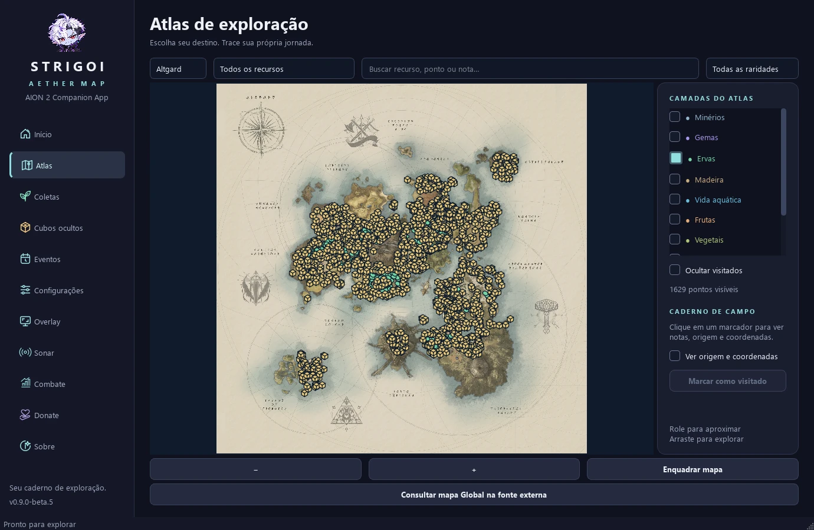

Instale e escolha o idioma
Baixe o instalador, leia os termos e escolha português ou inglês. Não precisa instalar Python.
Mapas, coletas, cubos, eventos e combate em um só lugar. Aether cuida do mapa. Você vive a aventura.
Windows 10/11 · 64 bits · PT-BR / EN-US
MENOS ALT-TAB. MAIS EXPLORAÇÃO.
Escolha suas camadas, registre as visitas e deixe o Strigoi acompanhar o que importa para você.

Veja ervas e cubos juntos, filtre os recursos e marque os lugares que você já visitou.
Imagens reais dos mapas e posições comunitárias com origem documentada. Os marcadores indicam locais possíveis, não spawns garantidos.
ACESSIBILIDADE AUDITIVA
O Sonar procura indícios do som do cubo e mostra um aviso com barra de intensidade e histórico recente. O volume do jogo influencia a leitura.
Desenvolvido como recurso de acessibilidade para pessoas surdas ou com deficiência auditiva. O aviso é uma pista: não confirma o cubo nem revela sua posição exata.
DO DOWNLOAD À AVENTURA
Baixe o instalador, leia os termos e escolha português ou inglês. Não precisa instalar Python.
Escolha as camadas do Atlas. A mesma seleção aparece no minimapa e no mapa grande.
Ative o overlay, selecione o terreno do minimapa uma vez e escolha o evento que quer acompanhar.
SEU PEQUENO GUARDIÃO ESTÁ PRONTO
Escolha como quer usar o Strigoi. As duas versões têm os mesmos recursos e incluem o código-fonte.
Beta 10: melhora a leitura dos membros do grupo quando há registros incompletos. A recuperação de cinco jogadores passou em testes controlados e aguarda confirmação em SA. Combate e PvP continuam experimentais; dados sem identidade observada permanecem não atribuídos.
SEM MISTÉRIO
Não. Os marcadores e avisos são janelas externas de overlay. O app analisa a imagem da tela e recebe o áudio pelo Windows; não injeta código nas DLLs, não altera arquivos nem lê a memória do AION 2. O Combate lê passivamente a conexão do jogo usando Npcap. Os termos descrevem as condições de uso.
Sim, com minimapa retangular e norte fixo. Selecione só o terreno do minimapa, sem a barra de título. Ao abrir o mapa grande com M, o overlay muda automaticamente; ao fechar, volta ao minimapa.
Há perfis de agenda SA, com fontes documentadas e horários no fuso que você escolher. Os mapas e locais possíveis vêm de bases comunitárias compartilhadas; as posições não foram verificadas individualmente em SA. Você pode consultar as fontes no aplicativo.
O Atlas, as visitas e a agenda local funcionam offline. Para usar overlay e Sonar, abra o jogo e ative esses recursos. Suas preferências e registros ficam no seu computador.
Abra Configurações → Idioma do aplicativo. A troca entre português do Brasil e inglês dos EUA é imediata. Ela não altera seus filtros, visitas, região ou fuso horário.
O código próprio usa GPLv3 e está no GitHub e nos downloads. Mapas, dados comunitários e componentes de terceiros mantêm seus direitos e licenças, incluindo CC BY-NC 4.0 para mapas e dados comunitários.
Consultar licenças e créditos →Se meu trabalho te ajudou e você quiser retribuir, pode deixar uma força por aqui. Sem pressão: usar o app, mandar feedback e compartilhar com a galera já ajuda demais.
Apoiar o criadorApoio pessoal ao criador · Mercado PagoAPOIE TAMBÉM A COMUNIDADE SURDA
Você também pode contribuir diretamente com instituições brasileiras que apoiam pessoas surdas.
ASSJPSão José dos PinhaisASCContagemDoações feitas nos canais oficiais das instituições. Destinatários diferentes do apoio ao criador.